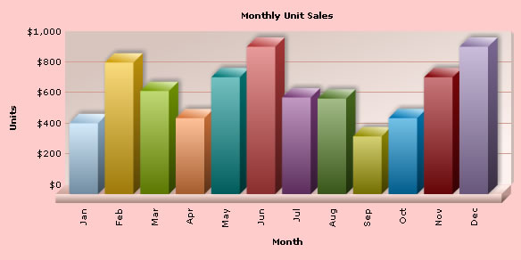

Using FusionCharts with RoR - Basic Examples
FusionCharts can effectively be used with Ruby to plot dynamic data-driven charts. In this set of examples, we'll show a few basic examples to help you get started.
We'll cover the following examples here:
- We'll use FusionCharts in Ruby with a pre-built Data.xml (which contains data to plot)
- We'll then change the above chart into a single page chart using dataXML method.
- Then, we'll use FusionCharts JavaScript class to embed the chart. This is present in the Download Package > Code > RoR > public > javascripts
- Finally, we will configure the chart using YML configuration file.
Let's quickly see each of them. Before you proceed with the contents in this page, we recommend you to go through the section "How FusionCharts works?".
All code discussed here is present in
Controller :
Download Package >Code >RoR >SampleApp >app >fusioncharts > controllers >basic_example_controller.rb.
View : Download Package > Code > RoR > SampleApp > app > views > fusioncharts > basic_example folder.
View Helper Modules: Download Package > Code > RoR > SampleApp > lib > fusion_charts_helper.rb
YML Configuration File: Download Package > Code > RoR > SampleApp > public > Data > chart_options.yml
All the charts can be accessed from the index controller in this manner: http://<ipaddress:port>/fusioncharts/index
Setting up the charts for use
In our code, we've used the charts contained in Download Package > Code > RoR > public >FusionCharts folder. When you run your samples, you need to make sure that the SWF files are in proper location. Also the Data.xml file used in simple_chart action is present in the Download Package > Code > RoR > public > Data folder.
Plotting a chart from data contained in Data.xml
Let's now get to building our first example. In this example, we'll create a "Monthly Unit Sales" chart using dataURL method. For a start, we'll hard code our XML data in a physical XML document Data.xml and then utilize it for our chart.
Let's first have a look at the XML Data document:
<chart caption='Monthly Unit Sales' xAxisName='Month' yAxisName='Units'
showValues='0' formatNumberScale='0' showBorder='1'>
<set label='Jan' value='462' />
<set label='Feb' value='857' />
<set label='Mar' value='671' />
<set label='Apr' value='494' />
<set label='May' value='761' />
<set label='Jun' value='960' />
<set label='Jul' value='629' />
<set label='Aug' value='622' />
<set label='Sep' value='376' />
<set label='Oct' value='494' />
<set label='Nov' value='761' />
<set label='Dec' value='960' />
</chart>
This XML is stored as Data.xml in Data Folder under public folder. It basically contains the data to create a single series chart to show "Monthly Unit Sales". We'll plot this on a Column 3D Chart. Let's see how to do that.
To plot a chart that consumes this data, you need to include the HTML code to embed a Flash object and then provide the requisite parameters. To make things simpler for you, we've put all this functionality in a function named as render_chart_html. This function is present in the fusion_charts_helper.rb file in the lib folder and is accessible to all views by including it in the application_helper.rb as shown:
include FusionChartsHelper
We will define a function called simple_chart in the controller. The view used for this controller is the simple_chart.html.erb file. We will use a layout to contain all the common elements of the html.erb files that we will be using and put only the specific elements or ruby code in individual templates.
Let's see it in example.
Controller: Fusioncharts::BasicExampleController
Action: basic_chart
class Fusioncharts::BasicExampleController < ApplicationController
#This is the layout which all functions in this controller make use of.
layout "common"
#In this function, a pre-defined Data.xml
#(contained in /Data/ folder)
#is used to provide the xml in the dataURL method.
#render_chart_html function from the helper
is invoked to render the chart.
#The function itself has no code, all the work
#
is done in the builder and the view.
def basic_chart
end
View:
<% @page_title="FusionCharts - Simple Column 3D Chart" %>
<% @page_heading="FusionCharts Examples" %>
<% @page_subheading="Basic example using pre-built Data.xml" %>
<%
#Create the chart - Column 3D Chart with data from Data/Data.xml
render_chart_html '/FusionCharts/Column3D.swf', '/Data/Data.xml',
'', 'myFirstHTML', 600, 300, false do-%>
<% end -%>
The actions in this controller use a layout named "common". This file common.html.erb is present in the views/layouts folder. We will see the details of this layout in a minute.
As seen above, we have not written any code in the action basic_chart - the action is just defined empty. Rails by default, renders a template by the same name. (In this case, basic_chart.html.erb)
In the basic_chart.html.erb template, we have assigned values for page_title, page_heading and page_subheading variables which will be used in the "common" layout.
render_chart_html function
The code written to show the chart is just one line function call to the function render_chart_html present in the fusion_charts_helper.rb. To this function, you need to pass the following parameters (in the same order):
| Parameter | Description |
| chart_swf | SWF File Name (and path) of the chart which you intend to plot. Here, we are plotting a Column 3D chart. So, we've specified it as /FusionCharts/Column3D.swf |
| str_url | If you intend to use dataURL method for the chart, pass the URL as this parameter. Else, set it to "" (in case of dataXML method). In this case, we're using Data.xml file, so we specify Data/Data.xml |
| str_xml | If you intend to use dataXML method for this chart, pass the XML data as this parameter. Else, set it to "" (in case of dataURL method). Since we're using dataURL method, we specify this parameter as "". |
| chart_id | Id for the chart, using which it will be recognized in the HTML page. Each chart on the page needs to have a unique Id. |
| chart_width | Intended width for the chart (in pixels) |
| chart_height | Intended height for the chart (in pixels) |
| debug_mode | Whether to start the chart in debug mode. Please see Debugging your Charts section for more details on Debug Mode. |
All the actions in this controller use the "common" layout.
common layout
This is the layout used by most templates in our application. Here we place all the common elements of the page, so that, in each template., only the specifics can be dealt with. Here is how it looks:
<HTML>
<HEAD>
<TITLE><%= @page_title %></TITLE>
<%
#You need to include the following JS file,
# if you intend to embed the chart using JavaScript.
#Embedding using JavaScripts avoids the
# "Click to Activate..." issue in Internet Explorer
#When you make your own charts, make sure that
#the path to this JS file is correct.
#Else, you would get JavaScript errors.
%>
<%= javascript_include_tag "FusionCharts" %>
<style type="text/css">
<!--
body {
font-family: Arial, Helvetica, sans-serif;
font-size: 12px;
}
.text{
font-family: Arial, Helvetica, sans-serif;
font-size: 12px;
}
-->
</style>
</HEAD>
<BODY>
<CENTER>
<h2> <%= @page_heading %> </h2>
<h4><%= @page_subheading %> </h4>
<%= yield %>
<BR>
<BR>
<a href='/NoChart.html' target="_blank">Unable to see the chart above?</a>
</CENTER>
</BODY>
</HTML>
As you would notice, this layout contains all the common elements of the page like <html> ,<head>,<body>. Note that the included javascript file (FusionCharts.js) will not be used by basic_chart and basic_data_xml views of the controller Fusioncharts::BasicExampleController but all other views that use this layout will use this javascript. Hence it has been included here.
This layout, gets the title from a variable @page_title and puts it within the <title> </title> tags. Similarly, inside the body tag, it renders the values of @page_heading and @page_subheading. These values might differ from one template to the other and hence, each template needs to assign values to these variables, as seen in the view for basic_chart action.
At the bottom, there is a link to "/NoChart.html" which would display information to the user, in case he/she is unable to view the chart. The <%=yield%> inside the body ensures that any content in our specific template are included before rendering the page.
To view this page, you would open the browser and point to the basic_chart action of the basic_example controller present in the Fusioncharts folder. Suppose the host is localhost and port is 3000, then the address to be typed would be: http://localhost:3000/Fusioncharts/basic_example/basic_chart
The chart you see will be like the one shown below:

If you do not see a chart like the one above, please follow the steps listed in Debugging your Charts > Basic Troubleshooting section of this documentation.
Well, that was simple! Creating chart in Ruby on Rails using FusionCharts is fun and easy. FusionCharts allows the user to provide the xml in two ways. They are setDataURL and setDataXML.The basic_chart uses the dataURL method. Let's now convert the above chart to use dataXML method.
Basic Chart Using dataXML method
The action we will use for this is named basic_data_xml. Here is the code fragment showing this action.
Controller: Fusioncharts::BasicExampleController
Action: basic_data_xml
#This action demonstrates the ease of generating
#charts using FusionCharts.
#Here, we've used a Builder Template to build the XML data.
#Ideally, you would generate XML data documents at run-time,
#after interfacing with forms or databases etc.
#Such examples are also present.
#Here, we've kept this example very simple.
#render_chart_html function from the helper module is invoked
#
to render the chart.
#The function itself has no code(except setting the content type),
#
all the work is done in the builder and the view.
def basic_data_xml
response.content_type = Mime::HTML
end
View:
<% @page_title="FusionCharts - Simple Column 3D
Chart using dataXML method" %>
<% @page_heading="FusionCharts Examples" %>
<% @page_subheading="Basic example using dataXML method
(with XML data hard-coded in Builder Template itself)" %>
<p>If you view the source of this page, you'll see
that the XML data is present in this same page
(inside HTML code). dataXML method is
ideal when you've to plot small amounts of data.</p>
<%
# The xml is obtained as a string from builder template.
str_xml =render :file=>"fusioncharts/basic_example/sampledata"
#Create the chart - Column 3D Chart with data from
#
str_xml variable using dataXML method
render_chart_html '/FusionCharts/Column3D.swf', '', str_xml,
'myNextHTML', 600, 300, false do-%>
<% end -%>
Finally, we call render_chart_html function to render a Column3D chart (swf present in the public/FusionCharts folder), using the dataXML method by setting the value of str_xml in the third parameter.
Let us now take a look at the builder template.
#Creates xml with values for monthly sales data
#The values required for building the xml are hard-coded in this file
xml = Builder::XmlMarkup.new
xml.chart(:caption=>'Monthly Unit Sales',
:xAxisName=>'Month', :yAxisName=>'Units',
:showValues=>'0', :formatNumberScale=>'0', :showBorder=>'1') do
xml.set(:label=>'Jan',:value=>'462')
xml.set(:label=>'Feb',:value=>'857')
xml.set(:label=>'Mar',:value=>'671')
xml.set(:label=>'Apr',:value=>'494')
xml.set(:label=>'May',:value=>'761')
xml.set(:label=>'Jun',:value=>'960')
xml.set(:label=>'Jul',:value=>'629')
xml.set(:label=>'Aug',:value=>'622')
xml.set(:label=>'Sep',:value=>'376')
xml.set(:label=>'Oct',:value=>'494')
xml.set(:label=>'Nov',:value=>'761')
xml.set(:label=>'Dec',:value=>'960')
end
We have hardcoded the xml with the label and value attributes present in the <set> tag. Ideally, you would get this data from database at run-time.
Simple Chart using JavaScript to embed the chart
If you see the charts from previous examples in Internet Explorer, you'll see a screen as below:

Internet Explorer asks you to "Click and activate..." to use the chart. This is happening because of a technical issue on behalf of Microsoft. As such, all Flash movies need to be clicked once before you can start interacting with them.
However, the good news is that there's a solution to it. This thing happens only when you directly embed the HTML code of the chart. It would NOT happen when you use JavaScript to embed the chart. To see how to embed using JavaScript at code level, please see Creating Your First Chart > JavaScript Embedding Section.
Again, to make things simpler for you, we've provided a function called render_chart which helps you wrap this JavaScript function in Ruby, so that you don't have to get your hands dirty with JavaScript, Flash and HTML.
Let's now quickly put up a sample to show the use of this function.
Controller: Fusioncharts::BasicExampleController
Action: simple_chart
#Here, we've used a pre-defined Data.xml (contained in /Data/ folder)
#Ideally, you would NOT use a physical data file. Instead you'll have
#your own code virtually relay the XML data document.
#
Such examples are also present.
#For a head-start, we've kept this example very simple.
#This function uses the dataURL method of FusionCharts.
#A view with the same name simple_chart.html.erb is present
#and it is this view, which gets shown along with the layout "common".
#render_chart function from the helper module is invoked to render the chart.
#The function itself has no code, all the work is done in
#
the builder and the view.
def simple_chart
end
View:
<% @page_title="FusionCharts - Simple Column 3D Chart" %>
<% @page_heading="FusionCharts Examples" %>
<% @page_subheading="Basic example using pre-built Data.xml" %>
<%
#Create the chart - Column 3D Chart with data from /Data/Data.xml
render_chart "/FusionCharts/Column3D.swf", "/Data/Data.xml", "",
"myFirst", 600, 300, false, false do-%>
<% end -%>
simple_chart action of the controller will render the view simple_chart.html.erb. In this view, we call the render_chart function present in the fusion_charts_helper.rb, using the dataURL method by passing the second parameter as the path to the xml file.
Here is the code for render_chart function present in the FusionChartsHelper :
# Renders a chart from the swf file passed as parameter either
#
making use of setDataURL method or
# setDataXML method. The width and height of chart are passed as parameters
#
to this function. If the chart is not rendered,
# the errors can be detected by setting debugging mode to true while
#
calling this function. The view file can be registered to include javascript
# statements by setting registering with javascript
#
to true while calling this function.
# - parameter chart_swf : pass swf file that renders the chart.
# - parameter str_url : pass URL path to the xml file.
# - parameter str_xml : pass xml content.
# - parameter chart_id : Id for the chart, using which it will be
#
recognized in the HTML page. Each chart on the page needs to have a unique Id.
#
Datatype: String
# - parameter chart_width : pass value as integer as the width of the chart.
# - parameter chart_height : pass value as integer as the height of the chart.
# - parameter debug_mode : pass value as true ( a boolean )
for debugging errors, if any, while rendering the chart.
# - parameter register_with_js : pass value as true ( a boolean )
for view file to be registered to include javascript statements.
# Can be called from html block in t he view where the chart needs to be embedded.
def render_chart(chart_swf,str_url,str_xml,chart_id,chart_width,
chart_height,debug_mode,register_with_js,&block)
chart_width=chart_width.to_s
chart_height=chart_height.to_s
concat("\t\t<!-- START Script Block for Chart-->\n\t\t")
concat(content_tag("div","\n\t\t\t\tChart.\n\t\t",{:id=>chart_id+"Div",:align=>"center"}))
concat("\n\t\t<script type='text/javascript'>\n")
debug_mode_num= debug_mode ? "1" : "0"
register_with_js_num= register_with_js ? "1" : "0"
concat("\t\t\t\tvar chart_"+chart_id+"=
new FusionCharts('"+chart_swf+"','"+chart_id+"',"+chart_width+",
"+chart_height+",'"+debug_mode_num+"','"+register_with_js_num+"');\n")
if str_xml==""
concat("\t\t\t\t<!-- Set the dataURL of the chart -->\n")
concat("\t\t\t\tchart_"+chart_id+".setDataURL(\""+str_url+"\");\n")
logger.info("The method used is setDataURL.The URL is " + str_url)
else
concat("\t\t\t\t<!-- Provide entire XML data using DataXML method -->\n")
concat("\t\t\t\t")
concat('chart_'+chart_id+'.setDataXML(\''+str_xml+'\');')
concat("\n")
logger.info("The method used is setDataXML.The XML is " + str_xml)
end
concat("\t\t\t\t<!-- Finally render the chart. -->\n")
concat("\t\t\t\tchart_"+chart_id+".render('"+chart_id+"Div');\n")
concat("\t\t</script>\n")
concat("\t\t<!-- END Script Block for Chart. -->\n")
end
The render_chart function takes the following parameters:
| Parameter | Description |
| chart_swf | SWF File Name (and Path) of the chart which you intend to plot. Here, we are plotting a Column 3D chart. So, we've specified it as /FusionCharts/Column3D.swf |
| str_url | If you intend to use dataURL method for the chart, pass the URL as this parameter. Else, set it to "" (in case of dataXML method). In this case, we're using Data.xml file, so we specify Data/Data.xml |
| str_xml | If you intend to use dataXML method for this chart, pass the XML data as this parameter. Else, set it to "" (in case of dataURL method). Since we're using dataURL method, we specify this parameter as "". |
| chart_id | Id for the chart, using which it will be recognized in the HTML page. Each chart on the page needs to have a unique Id. |
| chart_width | Intended width for the chart (in pixels) |
| chart_height | Intended height for the chart (in pixels) |
| debug_mode | Whether to start the chart in debug mode. Please see Debugging your Chart Section for more details on Debug Mode. |
| register_with_js | Whether to register the chart with JavaScript. Please see FusionCharts and JavaScript section for more details on this. |
When you now view the chart, you'll see that no activation is required even in Internet Explorer.
Simple Chart using JavaScript and dataXML method
In the previous example, we have seen the advantages of using javascript to render the chart. Let us now try using the setDataXML method in conjunction with this. Here is the controller and view code:
Controller: Fusioncharts::BasicExampleController
Action: data_xml
#A Builder Template is used to build the XML data which is hard-coded.
#Ideally, you would generate XML data documents
#in the builder at run-time,
#after interfacing with forms or databases etc.
#
Such examples are also present.
#We set the content-type header to text/html.
#render_chart function from the helper is invoked to render the chart.
#The action itself has no code,
#all the work is done in the builder and the view.
def data_xml
response.content_type = Mime::HTML
end
View:
<% @page_title="FusionCharts - Simple Column 3D
Chart using dataXML method" %>
<% @page_heading="FusionCharts Examples" %>
<% @page_subheading="Basic example using dataXML method
(with XML data hard-coded in Builder Template itself)" %>
<p>If you view the source of this page, you'll see that the XML data
is present in this same page (inside HTML code). dataXML method is
ideal when you've to plot small amounts of data.</p>
<%
# The xml is obtained as a string from builder template.
str_xml = render :file=>"fusioncharts/basic_example/sampledata"
#Create the chart - Column 3D Chart with data from str_xml variable
#
using dataXML method
render_chart '/FusionCharts/Column3D.swf', '', str_xml, 'myNext',
600, 300, false, false do-%>
<% end -%>
This view is similar to the basic_data_xml.html.erb we had seen before.
Here also, we have used a builder template to build the required xml. We use the render function to render the builder xml and assign to the variable str_xml.
This str_xml is passed as parameter to the render_chart function to render a Column3D chart. The builder used for this purpose is the same sampledata.builder that we saw in the basic_data_xml action. The resulting chart looks similar to the one seen in the previous example.
Configuring the chart
In our previous examples, we have created a simple chart by providing the xml to it. Let us now see how we can configure a few properties of the chart. Typically in a rails application, YAML is the format used for configuration purposes. We will adopt the same convention. We will store the configuration of the chart in a yml file (public/Data/chart_options.yml) and merge these values in the xml. Let us see this in an example.
Controller: Fusioncharts::BasicExampleController
Action: configured_chart
# This action loads the yml configuration file,
#
these values are used in the builder.
def configured_chart
@chart_options= YAML::load_file("public/Data/chart_options.yml")
end
View:
<% @page_title="FusionCharts - Configured Column 3D Chart" %>
<% @page_heading="FusionCharts Examples" %>
<% @page_subheading="Basic Configured chart example using dataXML method and chart options from yml file" %>
<p>The chart options for this chart have been taken from chart_options.yml file</p>
<%
# The xml is obtained as a string from builder template.
#
This xml will also contain the chart configuration attributes loaded from yml
str_xml = render :file=>"fusioncharts/basic_example/sampledatawithchartoptions",
:locals=>{:chart_options=>@chart_options,:option=>"col3d"}
#Create the chart - Column 3D Chart with data from str_xml variable using dataXML method
render_chart '/FusionCharts/Column3D.swf', '', str_xml, 'configuredChart', 600, 300, false, false do-%>
<% end -%>
In the configured_chart action, the yml file is loaded. For this, the load method from YAML module is used. The view rendered for this action is configured_chart.html.erb. As it can be seen, this view is similar to the view from previous example. The only difference is in obtaining the xml from the builder.
- The builder file used here is sampledatawithchartoptions.builder.
- The parameters passed to this builder as locals are :chart_options=>@chart_options,:option=>"col3d". chart_options is the chart configuration values loaded from the yml file (by the controller). This is passed on to the builder. option value tells the builder which configuration to use. The yml file can contain several configurations, this parameter specifies which one of the configurations should be used in the xml. In our case, we have specified col3d as one of the configurations. Similarly, you could have one configuration per type of chart and use that configuration in the builder while constructing the xml.
Finally, the render_chart method is called, to render the configured chart. A brief glance at the builder sampledatawithchartoptions, will give us the complete picture.
#Creates xml with values for monthly sales data
#The values required for building the xml are hard-coded in this file
#The chart_options are merged
xml = Builder::XmlMarkup.new
options = {:caption=>'Monthly Unit Sales', :xAxisName=>'Month', :yAxisName=>'Units'}
options.merge!(chart_options[option])
xml.chart(options) do
xml.set(:label=>'Jan',:value=>'462')
xml.set(:label=>'Feb',:value=>'857')
xml.set(:label=>'Mar',:value=>'671')
xml.set(:label=>'Apr',:value=>'494')
xml.set(:label=>'May',:value=>'761')
xml.set(:label=>'Jun',:value=>'960')
xml.set(:label=>'Jul',:value=>'629')
xml.set(:label=>'Aug',:value=>'622')
xml.set(:label=>'Sep',:value=>'376')
xml.set(:label=>'Oct',:value=>'494')
xml.set(:label=>'Nov',:value=>'761')
xml.set(:label=>'Dec',:value=>'960')
end
Again, this builder template is similar to the one seen in previous example. Here some of the attributes like caption, xAxisName, yAxisName for the chart are specified and some attributes are taken from the locals hash. Both of these set of attributes are merged and provided as attributes to the chart tag. Here, chart_options[option] gives the configuration attributes specific to col3d only.
Now when we view the chart, we get a beautiful chart as shown below:
